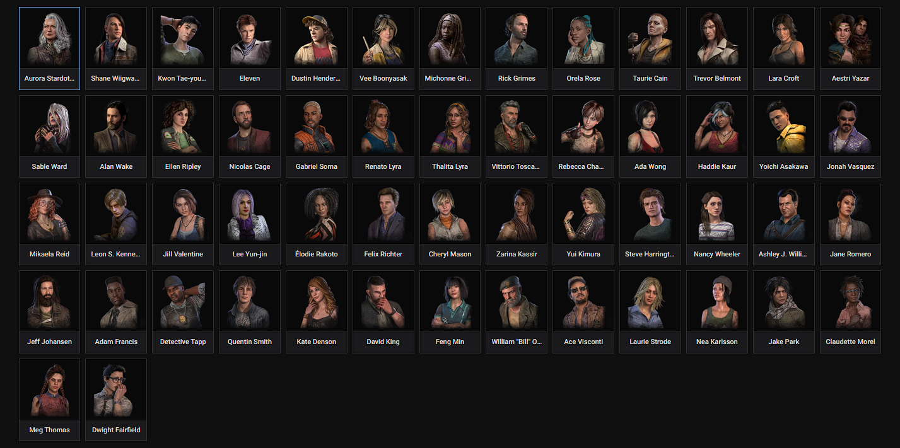
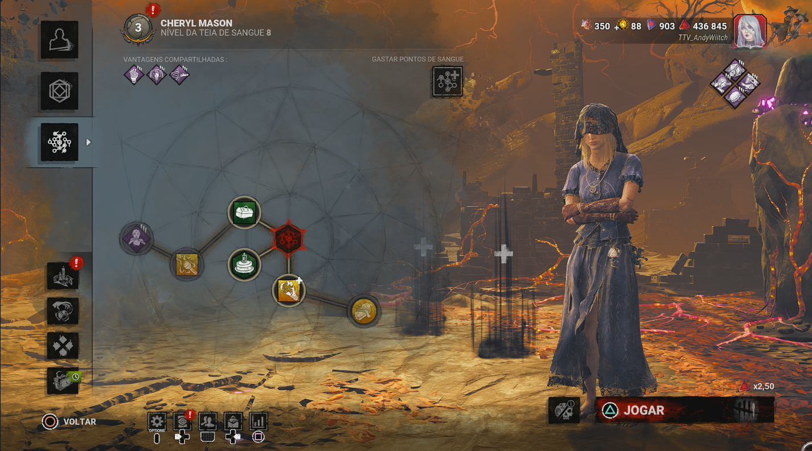
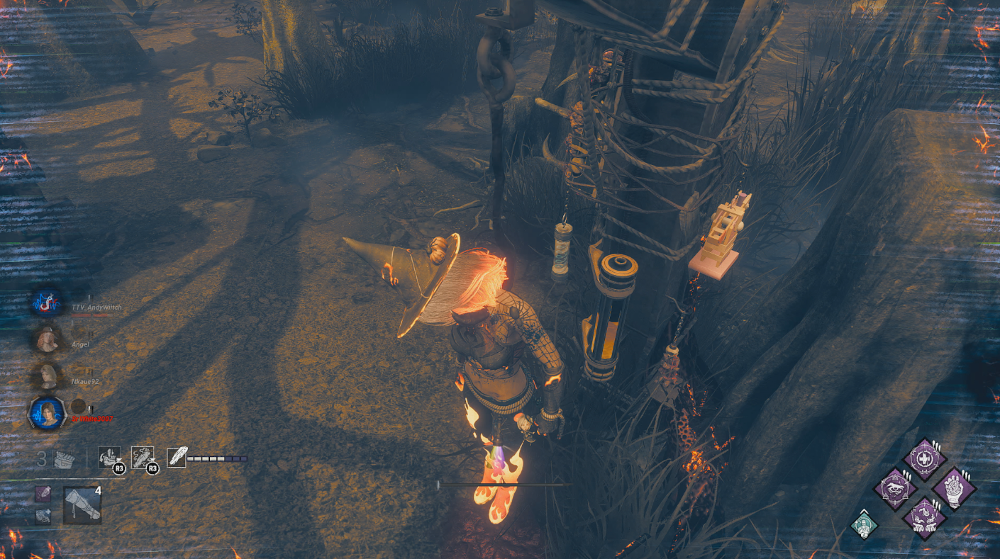
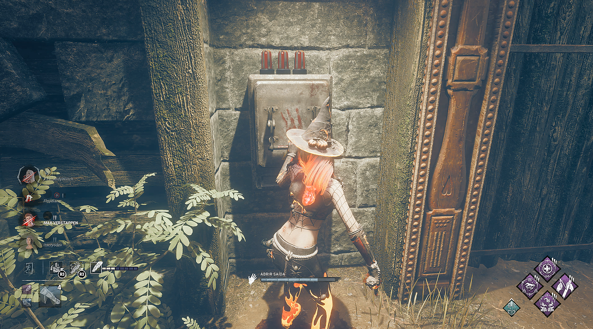
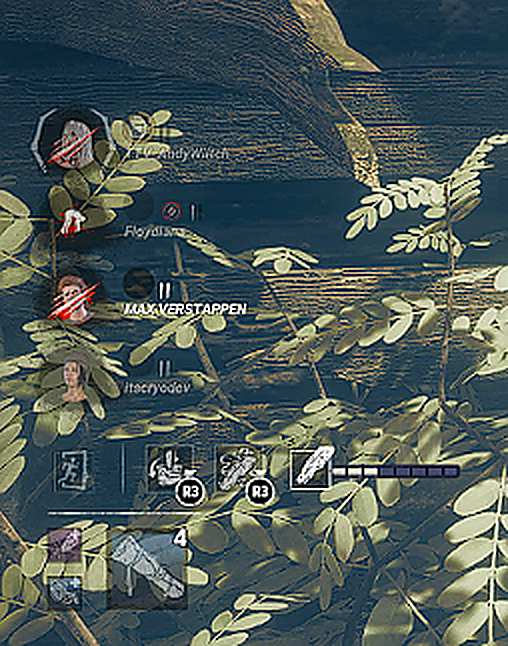

Fundamentos
Seu trabalho não é simplesmente “não ser pego”. É contribuir para o progresso da equipe enquanto administra o risco.
ObserveOnde está o Killer?
PriorizeQual objetivo precisa de ajuda?
PlanejeQual rota de fuga tenho?
Cada sobrevivente começa com três vantagens exclusivas. Ao alcançar os Prestígios 1, 2 e 3, você libera essas vantagens para todos os outros sobreviventes nos níveis correspondentes. Diferentemente dos assassinos, sobreviventes não têm poderes especiais próprios: a escolha de vantagens e itens define seu estilo de jogo.

A Teia de Sangue é onde você investe Pontos de Sangue para subir níveis, conseguir vantagens, itens, complementos e oferendas. Cada personagem possui sua própria progressão. Ao concluir o nível 50, você pode avançar seu Prestígio.

Vantagens, kits médicos, lanternas, caixas de ferramentas, complementos e oferendas para levar à partida.
No Prestígio 1, 2 e 3, as três vantagens exclusivas ficam disponíveis nos respectivos níveis para os demais sobreviventes. Também é possível melhorar vantagens desbloqueadas na Teia.
Durante eventos como Halloween e aniversário, podem surgir recursos e oferendas temáticas por tempo limitado. Seus efeitos e condições de uso variam conforme o evento; confira a descrição antes de equipar.
Do primeiro gerador ao seu primeiro chase consistente.
Seu trabalho não é simplesmente “não ser pego”. É contribuir para o progresso da equipe enquanto administra o risco.
Geradores são o principal objetivo do Survivor. Evite ficar parado e pense em quando vale a pena trocar de posição.
Durante uma perseguição, sua meta é ganhar tempo. Não corra sem direção: procure estruturas, pallets e janelas.
Loops são áreas onde obstáculos permitem repetir uma rota e criar distância. O segredo é saber quando continuar e quando sair.
Nesta partida, AndyWiitch aproveitou um pallet disponível enquanto estava saudável para manter a assassina ocupada e dar tempo aos aliados para reparar geradores. Como havia um gerador perto do loop, os colegas precisavam trabalhar em regiões mais distantes para não serem interrompidos.
O segredo foi olhar para trás, observar a intenção da assassina e antecipar sua próxima ação. Ela esperava que o pallet fosse derrubado, mas Andy continuou correndo e preservou o recurso. Contra assassinos com ataques à distância, derrubar um pallet na hora errada pode deixá-lo vulnerável.
Durante a perseguição, um gerador foi concluído e a assassina acabou desistindo. Lição: fazer loop é administrar tempo, espaço e recursos para ajudar a equipe — não apenas correr em círculos.
Vídeo real de AndyWiitch. Toque em reproduzir para acompanhar o exemplo.
Um bom resgate não é necessariamente o mais rápido. Observe o assassino, o tempo de gancho e o progresso dos geradores antes de agir.

Não é preciso correr para salvar no mesmo segundo. Use esse intervalo para avaliar a posição do assassino e organizar um resgate seguro. Mas não deixe o tempo acabar nem seu aliado passar para a próxima fase do gancho.
A HUD mostra o progresso do aliado no gancho. Se ele já estiver na metade do primeiro estágio, ninguém estiver indo resgatá-lo e você estiver longe, interrompa o que estiver fazendo e vá ajudar. Evite que ele avance para o segundo estágio: perder um companheiro pode tornar a partida muito mais difícil.
Planeje o trajeto e observe o assassino. O objetivo é chegar a tempo e realizar um resgate seguro — não esperar até o último segundo.
Se faltam poucos segundos para concluir um gerador e ainda há tempo suficiente para o resgate, finalize-o primeiro. Se o aliado estiver perto de mudar de estágio ou não houver outro jogador a caminho, priorize salvá-lo.
Um salvamento precipitado pode deixar dois sobreviventes feridos ou provocar outra queda imediata. Isso obriga quem estava nos geradores a interromper o progresso para ajudar. Espere uma oportunidade segura, distraia o assassino ou coordene o resgate com a equipe.
Concluir todos os geradores não significa que a partida acabou. Antes de escapar, observe os ganchos, a saúde dos aliados e a posição do assassino.


Um aliado no gancho e outros feridos? Antes de abrir o portão, avalie se há tempo para curar, reagrupar e planejar um resgate.
Se houver um resgate possível, deixe um portão quase aberto sem completar a ação: isso evita iniciar a contagem do Colapso do Fim de Jogo pelo portão. Combine quem vai abrir na hora da fuga. Se for seguro, prepare os dois portões.
Com três sobreviventes saudáveis e um no gancho, é possível dividir funções: alguém distrai o assassino, outro resgata e os demais protegem a rota de fuga. Receber um ataque comum pode dar um breve impulso de velocidade, mas não conte com isso contra qualquer poder.
Assassinos como o Canibal (Bubba) e o Caipira (Billy) podem derrubar sobreviventes saudáveis com seus poderes. Não tente bloquear ataques especiais como se fossem ataques básicos. Avalie também a proteção temporária após o desgancho, que depende das condições do jogo.
Se o resgate exigir um risco extremo, especialmente com colegas sem comunicação, escapar pode ser a melhor decisão. Nem sempre é possível salvar todos; evitar novas quedas também é jogar em equipe.
Os ícones indicam benefícios, penalidades e condições especiais. Consulte o nome em português e inglês e descubra o que cada efeito significa. A duração e as condições variam conforme a vantagem ou poder.